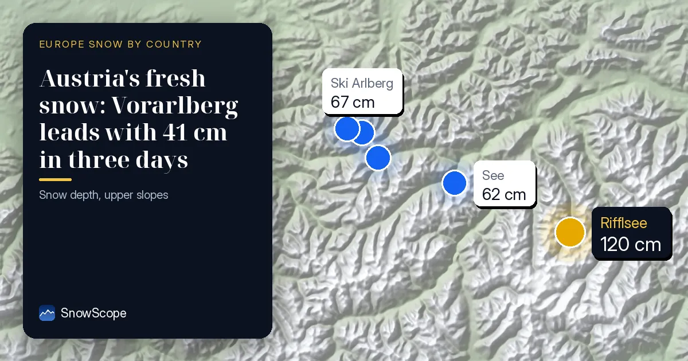
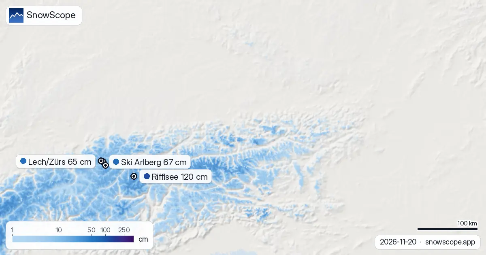

Austria's fresh snow: Vorarlberg leads with 41 cm in three days
A three-day storm has brought Austria its heaviest snow since the season began, with Vorarlberg receiving 41 cm. The wet bulk of this snow fell in the western ranges, where it will feed springs and streams as it settles and melts.
See the live snow forecast for Rifflsee in the SnowScope appSnow depth, powder alerts and the 3D map, free.
Where the snow landed
Vorarlberg caught the full force of the storm, accumulating 41 cm of new snow in the three days to 20 November. Carinthia to the south received 31 cm, and the Ötztal Alps in between took 28 cm. These wet deposits will form the core of the winter water supply in each valley.
Across Austria as a whole, 19,620 square kilometres saw at least 5 cm of fresh snow fall in those three days. That is two-thirds of the country's ski terrain. The snow line sat at 1,400 metres on 20 November, so lower valleys still remain mostly bare.
| Resort | Snow depth | New snow, 72 h | Coming, next days | Top |
|---|---|---|---|---|
| Rifflsee | 120 cm | 17 cm | 21 cm | 2,804 m |
| Ski Arlberg | 67 cm | 31 cm | 37 cm | 2,642 m |
| Lech/Zürs | 65 cm | 31 cm | 39 cm | 2,436 m |
| St. Anton/St. Christoph/Stuben | 65 cm | 25 cm | 36 cm | 2,642 m |
| See | 62 cm | 21 cm | 28 cm | 2,567 m |

New snow recorded
The heaviest falls in a single day are yet to come. The forecast shows that the storm will peak on 23 November, when 15 cm may fall. The next three days (to 23 November) could bring up to 38 cm in some areas, and the next seven days up to 44 cm.
In the past 24 hours alone, SnowScope shows a maximum of 11 cm fell. This rapid accumulation is now measurable at mountain stations and visible in the depth increases at ski areas from Lech/Zürs (which recorded 31 cm in three days) to Ski Arlberg (also 31 cm).

Where to find the deepest snow
Rifflsee at 2,804 metres holds the deepest pack: 120 cm as of 20 November. That glacier-fed site received 17 cm in three days and will gain another 21 cm in the next three days. The high ranges (above 2,500 metres) now have an average of 27 cm and are fully covered.
Above 2,000 metres, the snow is continuous at 100 per cent cover and averages 16 cm. Between 1,500 and 2,000 metres, 97 per cent of slopes are white, with a mean depth of 7 cm. Below 1,500 metres, snow is patchy: only 32 per cent cover between 1,000 and 1,500 metres, and just 3 per cent below 1,000 metres.
The storm's path and timing
The pattern is a classic north-to-south progression. Vorarlberg, exposed to moist Atlantic air and closest to the approach path, bore the brunt. The storm weakened as it crossed the ranges, so Carinthia and the central valleys caught less. This kind of uneven delivery is normal in alpine hydrology: the windward slopes fill fast, the lee sides fill more slowly.
Since the season began on 21 November, Austria has built 44 per cent white cover overall. That is thin for late November, but the new storm has lifted snow-covered area from 20 square kilometres a week ago to 22,850 today. The melt trend over the past day (2,320 square kilometres lost) reflects warmer air at lower elevations, not a loss of water stored above 1,500 metres.
What comes next
The second week of winter (28 November to 4 December) looks drier. Only 14 cm is forecast as a maximum, compared to the 36 cm possible in the first week. That means the peak of this storm, now underway, is the main event for November. Ski areas should see their best conditions between 23 and 25 November.
Switzerland is ahead with 64 per cent white cover and depths of 124 cm at Glacier 3000. Germany remains far behind at 4 per cent cover. Austria sits between these two, still building its snowpack but benefiting from the storm track.
Water storage view
From a hydrologist's perspective, this storm is significant. The new snow at high elevation is dry and will compress and consolidate over the coming weeks, forming a dense layer that will contribute steady meltwater to rivers and reservoirs through winter and spring. The 27 cm mean depth above 2,500 metres is the foundation of that supply.
The thin cover below 2,000 metres will melt first in any thaw and will not add much to streamflow, but every centimetre counts. Vorarlberg's 41 cm will be absorbed faster than the central ranges' 28 cm, creating an early spike in the Ill and Rhine. By early December, most of this new snow will have settled and begun its slow release into the valley water cycle.
Tips for skiers
- Check the official avalanche bulletin before touring in Vorarlberg, Carinthia, or the Ötztal Alps; the storm has deposited snow on steep terrain faster than it has bonded. Wait until 23 November to judge stability after the peak of the storm.
- Above 2,000 metres, snow is now continuous; stay on marked runs below that height for the next few days, as bare ground and hidden rocks are common between 1,400 and 1,900 metres.
- Rifflsee and other glacier-fed resorts above 2,500 metres offer the most reliable snow through November. Lower resorts like Lech/Zürs or Ski Arlberg will improve sharply from 23 November onward as the forecast 37–39 cm arrives.
- Meltwater in Vorarlberg's valleys will rise over the next 48 hours; plan river crossings carefully if you are off-piste near streams. The wet nature of this snow means rapid consolidation and fast drainage.
- Use SnowScope to track exact depths at your chosen resort; regional averages mask steep gradients from north-facing to south-facing slopes.
About these numbers
Resort snow depths are the deepest snow on the resort's upper slopes on the date shown; they are estimates for an area, not a measurement at one point. Forecasts can change. Always read the official avalanche bulletin before going off-piste.
Cite this report
For research, teaching or the press: the numbers and charts are free to reuse under CC BY 4.0 with this citation.
SnowScope (2026), Austria's fresh snow: Vorarlberg leads with 41 cm in three days, https://snowscope.app/blog/en/2026/11/austria-where-the-snow-fell-20-november-2026.html, accessed 2026-11-20
SnowScope (Atlas Labs). (2026, November 20). Austria's fresh snow: Vorarlberg leads with 41 cm in three days. SnowScope snow reports. https://snowscope.app/blog/en/2026/11/austria-where-the-snow-fell-20-november-2026.html
BibTeX
@misc{snowscope2026austriawherethesnowfell2,
author = {{SnowScope (Atlas Labs)}},
title = {Austria's fresh snow: Vorarlberg leads with 41 cm in three days},
year = {2026},
month = nov,
howpublished = {\url{https://snowscope.app/blog/en/2026/11/austria-where-the-snow-fell-20-november-2026.html}},
note = {Published 2026-11-21 11:49 UTC; accessed 2026-11-20}
}· CC BY 4.0 · Methods, data and tools →
Rifflsee: snow and temperature by height, this winter vs last (tools) →
Follow Rifflsee
Free: a message when fresh snow is coming, and the forecast every morning.
More snow reports

St Anton has 1 cm at the top and 5 cm mid-mountain on 13 November. The coming week brings 33 to 42 cm, but rain in the village.

Lech Zürs snow report for 13 November 2026: about 6 cm at the top (2436 m) and at mid-mountain, bare in Lech at 1430 m. This week 42 cm up high on our forecast, up to 91 cm on others, rain and snow mixed around 1400 m. And why Lech is the snowy side of the Arlberg.

From Walser farmers to the White Ring: the dates that made Lech Zürs, followed by our snow record then and now, the first fifteen of 46 past winters against the last fifteen.